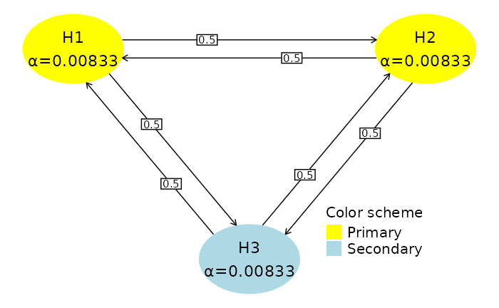

Introduction
With gsDesign version 3.1, we have added a function to support graphical multiplicity methods using ggplot2, this function is migrated to the gMCPLite package now.
The graphical method is introduced nicely in Bretz et al. (2011) and originally supported by
the gMCP packages (Rohmeyer and Klinglmueller
(2020)), and now gMCPLite package. It was extended to group
sequential design by Maurer and Bretz
(2013). While the gMCPLite package supports graphics, here we add
the hGraph() function to create multiplicity graphs using
the ggplot2 package as a convenience for those desiring this format. We
demonstrate basic formatting in this article and demonstrate use with
gMCPLite in the other article.
Use of hGraph() is organized as follows:
- The basic graph layout
- Specifying hypothesis names and -allocation
- Text formatting and location, ellipse size
- Specifying the transition matrix between hypotheses
- Using colors and legends
The basic graph layout
We begin with the default plot to demonstrate the basic formatting
below. Hypotheses and initial
-allocation
or weighting are presented in shaded ellipses with the first hypothesis
specified in the upper-left part of the plot. While the user has full
control of ellipse placement and color, the default is to present
clockwise on a larger ellipse with gray shading. One advantage of
default placement is that generally transition lines between hypotheses
will not cross hypothesis ellipses, including when the graph is updated
when some hypotheses are rejected. Transition weights between hypotheses
are specified on directional lines between the hypothesis ellipses. Try
this in a plot window. Note the effect if you change the size of the
plot window. In a similar fashion, if you are using R Markdown,
parameters like fig.width, fig.height, and
fig.asp will affect formatting.
hGraph()Specifying hypothesis names and -allocation
Next we specify the number of hypotheses, hypothesis names and
-allocation
or weighting. Whereas the default plot above used
-allocation
adding to 0.025, here we use weights adding to 1. Note the
\n character used to insert a carriage return in hypothesis
name text. The character used for weights (specified in
wchar) is by default
under Windows and w otherwise. Note the clockwise placement
of hypotheses.
Text formatting and location, ellipse size
You can specify location of hypothesis ellipses in two ways.
- For the first, specify in radians where on the large ellipse where
the first hypothesis is placed. Setting
for
radianStartplaces the first hypothesis at the center and top of the plot (left plot). - Specifying
xandycoordinates, right graph, allows custom placement; note that the differences in minimum and maximum x- and y-values you use as well as window size will impact formatting.
Ellipse and the text size as well as maximum significant digits for hypotheses are controlled as follows:
- Size of text in hypothesis ellipses is controlled by the
sizeparameter (left graph). This text is always placed at the center of the ellipse with no user control. - Size of ellipses is controlled by
halfWid(left graph) andhalfHgt(not shown; default 0.5) parameters. -
digitsspecifies the maximum digits for the -allocation (not shown here; default 5)
Box and text size as well as maximum significant digit display for transition weights are controlled as follows:
-
boxtextsize(right graph) controls text size for transition weights -
trhw(left graph) controls half-width for transition box size -
trhh(not shown; default 0.075) controls half-height for transition box size -
trprop(right graph) specifies the proportional placement of transition weight boxes along the transition lines At present, this is the same for all transitions -
arrowsize(left plot) controls the size of the arrows between ellipses
The other parameter shown here is offset (left graph).
This is in radians; it increases and decreases offset of transition
lines between hypothesis ellipses. If there are not any transition
arrows in both directions between any pair of hypotheses,
offset = 0 is a reasonable option.
grid.arrange(
# Left graph in figure
hGraph(
nHypotheses = 3,
size = 5, # Decrease hypothesis text size from default 6
halfWid = 1.25, # Increase ellipse width from default 0.5
trhw = 0.25, # Increase transition box sizes from default 0.075
radianStart = pi / 2, # First hypothesis top middle
offset = pi / 20, # Decrease offset between transition lines
arrowsize = .03 # Increase from default 0.02
),
# Right graph in figure
hGraph(
nHypotheses = 3,
x = c(-1, 1, -1), # Custom placement using x and y
y = c(1, 1, -1),
halfWid = 0.7, # Increase ellipse width from default 0.5
boxtextsize = 3, # Decrease box text size from default 4
trprop = .15 # Slide transition boxes closer to initiating hypothesis
),
nrow = 1
)Using colors and legends
The default color palette for ellipse shading is monochrome (left plot below). To limit the parameters used, we have not adjusted text, ellipse and box size as above. Colors are specified as follows:
- A
fillcolor category; here we group the first 2 hypotheses and last 2 hypotheses (both graphs) - The
palettespecifies a palette for the colors (right graph)
grid.arrange(
# Left graph in figure
hGraph(
fill = c(1, 1, 2, 2),
alphaHypotheses = c(.2, .2, .2, .4) * .025
),
# Right graph in figure
hGraph(
fill = c(1, 1, 2, 2),
palette = c("pink", "lightblue"),
alphaHypotheses = c(.2, .2, .2, .4) * .025
),
nrow = 1
)Next, we add a legend.
- The legend is added when the default of
legend.positon = "none"is replaced. Here we use a custom position specifying the relative positioning on the (0,1) scale in the x- and y-range of the graph. Commonly used options are"left","right","top", or ’“bottom”` -
legend.name(default is none) specifies a name for the legend -
labelsspecifies labels corresponding to thefillparameter
hGraph(
nHypotheses = 3,
fill = c(1, 1, 2),
palette = c("yellow", "lightblue"),
legend.name = "Color scheme",
labels = c("Primary", "Secondary"),
legend.position = c(.75, .25)
)
Specifying the transition matrix between hypotheses
Transition weights are specified in matrix format in the variable
m. The matrix must be square of dimension
nHypotheses and have 0 on the diagonal. Rows represent the
hypotheses from which transitions start; row values should sum to 1.
Columns represent the hypotheses to which transition arrows go. Any
transition weight of 0 has no corresponding transition line in the
figure.